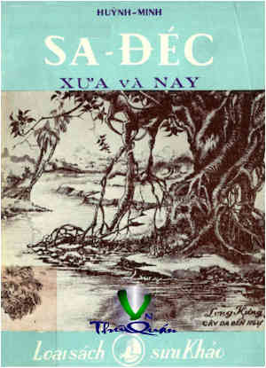

« Back
Sa-Đéc Xưa Và Nay
By Huỳnh Minh

Lời Giới Thiệu
LỜI TÁC GIẢ
PHẦN THỨ NHỨT -SỬ-LƯỢC Trải Qua Các Thời-Đại
SA-ĐÉC TRONG THỜI CHÚA NGUYỄN-PHÚC-ÁNH BÔN BA TẨU QUỐC
SA-ĐÉC QUA CÁC TRIỀU ĐẠI NHÀ NGUYỄN-PHÚC
QUÂN PHÁP CHIẾM BA TỈNH MIỀN TÂY
SA-ĐÉC HIỆN-ĐẠI
PHẦN THỨ NHÌ: DANH NHÂN LỊCH-SỬ
NHÂN-VẬT CẬN-ĐẠI II
ĐẶNG-THÚC-LIÊN
NGUYỄN-QUANG-DIÊU
TIỂU SỬ CỤ VÕ-HOÀNH(1) (1873 - 1946)
LƯU-VĂN-LANG
TÓM LƯỢC PHẦN DANH-NHÂN
PHẦN THỨ BA: DI-TÍCH LỊCH-SỬ HUYỀN-SỬ
BẢO-TIỀN VỚI NGÔI MIẾU THỜ
CÂY DA BẾN NGỰ
HUYỀN SỬ
PHẦN THỨ TƯ:SINH-HOẠT TÔN-GIÁO
ĐỨC TÔNG SƯ MINH-TRÍ
ĐẠI ĐẠO TAM KỲ PHỔ ĐỘ
CỔ-TỰ PHƯỚC-THẠNH
TỔ-ĐÌNH BỬU-HƯNG-TỰ
CHÙA KIẾN-AN-CUNG
ĐẤT LÀNH PHẬT NGỰ
SA-ĐÉC VỚI PHẬT-GIÁO HÒA-HẢO
PHẦN THỨ NĂM: HUYỀN-THOẠI
SỰ TÍCH LÀNG BÌNH TIÊN
GIAI THOẠI
CỤ LƯU-VĂN-LANG
XOÀI THƠM, XOÀI NGỰ
PHẦN THỨ SÁU:
SA-ĐÉC DƯỚI MẮT CỦA THI-NHÂN
PHẦN THỨ BẢY:
Sinh Hoạt Kinh Tế
SA-ĐÉC VỚI NGHỀ LÀM GẠCH NGÓI
TỔNG KẾT SA-ĐÉC
MỤC LỤC